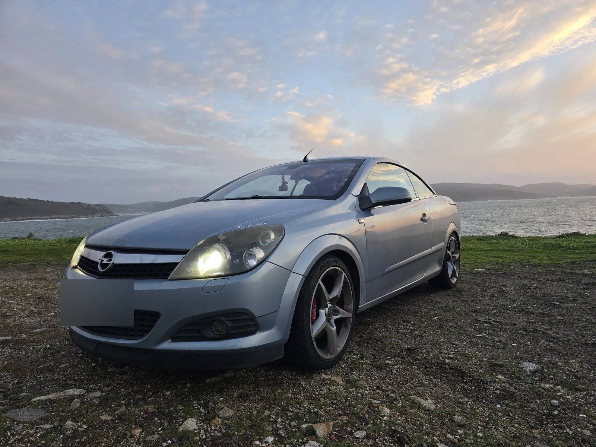
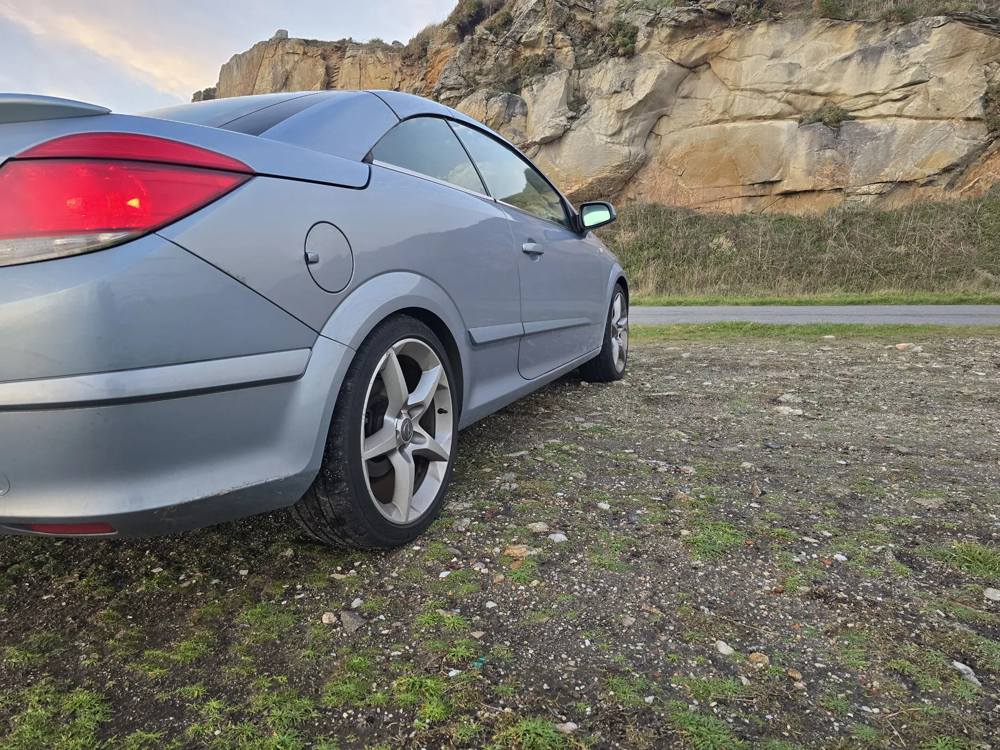
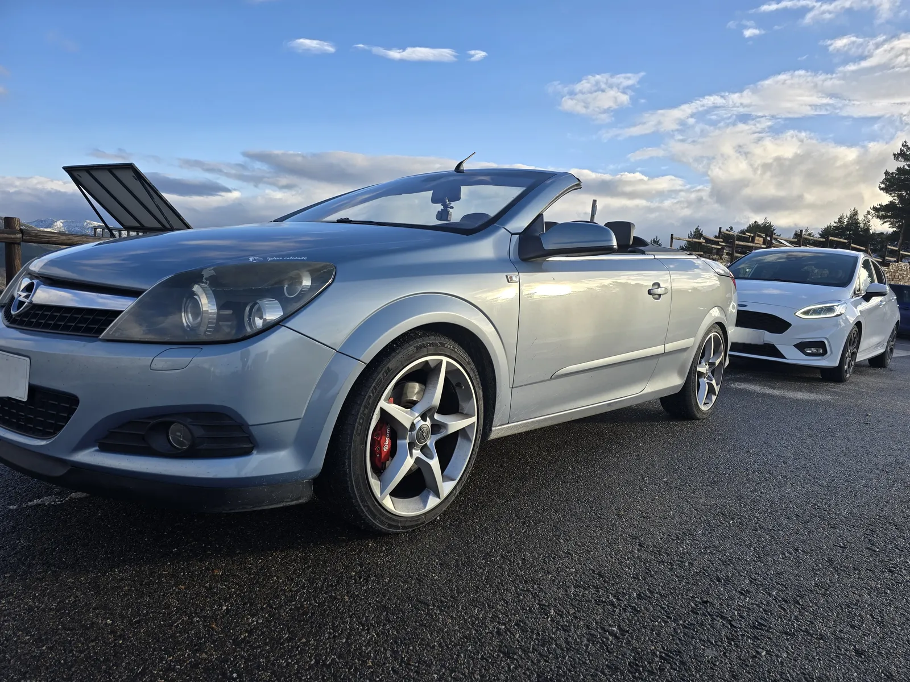
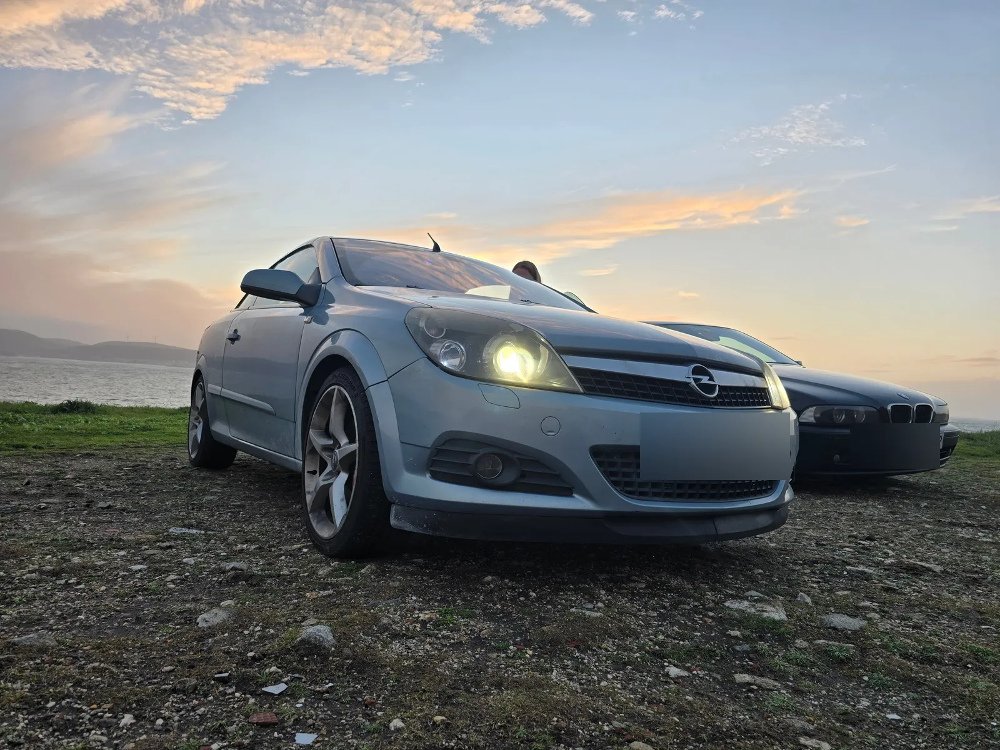

Opel Astra H TwinTop
En línea · de Anna
Un descapotable para el día a día, que sorprendió por lo bien que va. Lo mejor: los días de sol, descapotado.
El coche
Necesitábamos otro coche y encontramos este Astra. Pepe fue a revisarlo para comprobar que estuviese bien de motor y mecánica, y vimos que era una buena opción. Buscábamos algo asequible, que encajase con nuestra economía en aquel momento. Para mí era importante que me gustase estéticamente y que estuviese en buenas condiciones. No buscábamos nada extraordinario, simplemente un coche que funcionase bien. Después nos sorprendió lo bien que iba, sobre todo por el turbo.
Llevo aproximadamente un año con él y lo uso sobre todo para ir a trabajar y para el día a día. Lo que más disfruto es cuando hace buen tiempo y voy con Pepe descapotada, disfrutando del ambiente, del aire libre y de poder mirar al cielo.
Ficha
- Motor
- 1.9 CDTI, 150 CV
- Año
- 2006
- Color
- Azul clarito
- Kilómetros
- 282.500, aproximadamente
- Ya venía con
- Suspensión trasera Eibach
- Reprogramación
- Llantas del Opel Astra GTC
- Desde que lo tenemos
- Solo el mantenimiento habitual, como los cambios de aceite
- Próximos planes
- Cambiar los faros, que están bastante deteriorados
Galería


